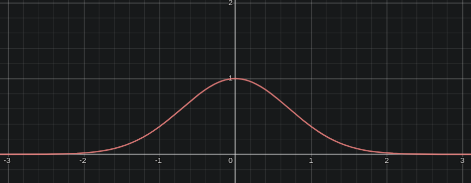

[Ref] The simplest gaussian function:
$$
f(x) = e^{-x^2}
$$
With parameters:
$$
f(x) = ae^{-\frac{(x-b)^2}{2c^2}}
$$
$a$ is the height of the curve's peak
$b$ is the position of the center of the peak
$c$ is the standard deviation that controls the width of the "bell" shape
With increasingly positive values of $x$, the function decreases exponentially. With increasingly negative values of $x$, the function increases exponentially. But, overall, with increasing values of $x$, the function decreases exponentially.
$e^{-x^2}$

$e^{-x^2}$
The function decreases exponentially for both positive and negative values of $x$. As $x$ approaches 0, the function's value approaches 1; hence, the slight flatness at the top of the bell curve. For example, if $x=0.2$, $x^2$ would be $0.04$, a smaller value! That's why $e^{-k}$ if $k=x^2$ would be closer to $1$. After $x=1$, any squared $x$ actually increases the value of $x^2$.
With negative exponents, the value keeps decreasing exponentially. $x$ is still positive.
the function's value is still positive
$e^{-x}$
This is a mirror of $e^x$. The value of the function decreases exponentially with positive $x$. But, increases exponentially with negative $x$. To get the familiar bell shape, we need to curb this exponential increase with negative values of $x$ and replicate the exponential decrease seen with positive $x$. Hence, we square $x$.
$e^{-(x-\mu)^2}$
The peak of the bell curve gets centred on $\mu$, i.e. with increasing positive values of $\mu$, the peak shifts to the right. The peak is at $e^0$. If $\mu$ increases, we'd have to increase $x$ to subtract to $0$.
$e^{-\frac{(x-\mu)^2}{\sigma^2}}$
For a given distribution, fixed $\mu$ and $\sigma^2$, the peak represents the most probable value, i.e. $e^{-x^2}$ (taking the general form since the rest are fixed) has to be the maximum. Or $-x^2$ has to be the maximum. If $\sigma$ wasn't squared, we would get an inverted bell curve for a negative $\sigma$.